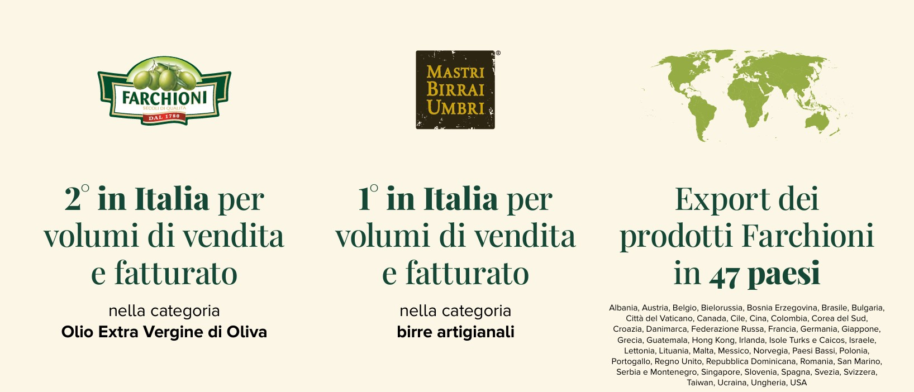

L'impegno sostenibile della famiglia Farchioni per la tutela del territorio e dell'ambiente.
Vai al Download Diretto dei Report Scorri per scoprire di piùPrincipali indicatori ambientali, economici e produttivi estratti dal report aziendale.
Ricavi Netti
Valore dei ricavi netti consolidati al 31 Dicembre 2024. Consulta la sezione "risultati economici" a pagina 115 del report 2024 per maggior dettaglio
Intensità Emissiva (Scope 1+2)
Calcolo riferito alle emissioni dirette e indirette per unità di prodotto. Consulta la sezione "impatto ambientale" a pagina 10 del report 2024 per maggior dettaglio
Piante Coltivate (Olivi e Viti)
Numero totale di piante coltivate nelle tenute. Consulta la sezione "territorio e biodiversità" a pagina 91 del report 2024 per maggior dettaglio
Packaging da Materiali Riciclati
Percentuale di packaging realizzato con materiali riciclati. Consulta la sezione "sostenibilità" a pagina 21 del report 2024 per maggior dettaglio

Gestione sostenibile delle colture e salvaguardia della biodiversità nelle tenute.

Riduzione del consumo idrico nei campi e transizione verso fonti rinnovabili nei 6 impianti. Nel 2024 è in corso di installazione un nuovo impianto fotovoltaico pari a 248 Kw/h.

| Ambito ESG | Indicatore / KPI | FY 2022/2023 | FY 2023/2024 | Note / Trend |
|---|---|---|---|---|
| Ambiente & Economia Circolare | Consumo Energia Elettrica Totale | 5.611 MWh | 6.088 MWh | ▲ Aumento legato all'incremento produttivo |
| Emissioni GHG Scope 1 (Dirette) | 367,6 tCO₂eq | 332,0 tCO₂eq | ▼ -9,7% per efficientamento processi | |
| Superficie Agricola Gestita | 2.283 ha | 2.283 ha | Totale ettari filiera agroalimentare | |
| Sottoprodotti e Scarti Recuperati | 100% Sanza/Ghiacciolo | 100% Recupero | Valorizzati per biogas, mangimi ed energia | |
| Materiali da Imballaggio Riciclati/Riciclabili | > 85% | > 90% | ▲Utilizzo prevalente di vetro riciclato e PET | |
| Sociale & Risorse Umane | Organico Totale di Filiera | 187 dipendenti | 187 dipendenti | Capofiliera ed aziende connesse |
| Contratti a Tempo Indeterminato (Capofiliera) | 98% (46/47) | 98% (46/47) | Elevata stabilità occupazionale | |
| Infortuni sul Lavoro Registrati | 0 | 0 | Zero infortuni sia gravi sia lievi | |
| Ore Totali di Formazione Erogate | 16.985 ore | ~17.200 ore | ▲ Focus su sicurezza, ISO e sostenibilità | |
| Presenza Femminile in Organico | ~32% | ~33% | ▲ Ripartizione di genere in crescita organica | |
| Economia & Valore Distribuito | Fatturato / Valore della Produzione | 144,4 Mln € | 171,0 Mln € | ▲ Incremento 18,75% |
| Fornitori Locali (Regione Umbria) | 14% (~20 Mln €) | 14% (~20 Mln €) | Impatto economico diretto sul territorio | |
| Certificazioni Integrate Attive | 6 | 6 | ISO 9001, 14001, 45001, 50001, SA8000, HACCP | |
| Investimenti in R&S Sostenibile | N.D. | In crescita | Focalizzati su tracciabilità ed efficientamento |
Consulta e scarica i documenti ufficiali messi a disposizione dall'azienda.